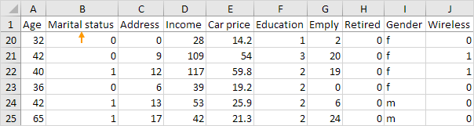
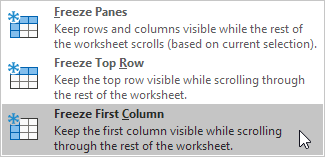
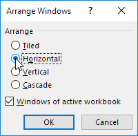
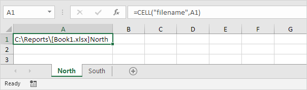
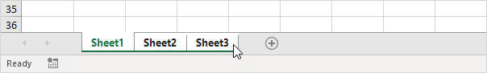

Dalam kebanyakan kasus, Anda dapat menggunakan simbol minus dan plus di status bar untuk memperbesar dokumen dengan cepat. Gunakan tombol pada tab Lihat untuk memperbesar persentase tertentu dan memperbesar pilihan.
-
Untuk memperbesar dokumen dengan cepat, gunakan simbol minus dan plus di status bar.

Untuk memperbesar ke persentase tertentu, jalankan langkah-langkah berikut.
-
Pada tab Lihat, di grup Zoom, klik Zoom.

-
Masukkan nomor (antara 10 dan 400) dan klik OK.
Untuk memperbesar pilihan, jalankan langkah-langkah berikut.
- Pertama, pilih Range sel.
-
Pada tab View, di grup Zoom, klik Zoom to Selection.

unduh file latihan
Split (Memisahkan)
Pisahkan lembar kerja Anda untuk melihat beberapa bagian yang jauh dari lembar kerja Anda sekaligus. Untuk membagi lembar kerja Anda ( jendela ) menjadi bagian atas dan bawah (panel), jalankan langkah-langkah berikut.
-
Pertama, pilih sel di kolom A.

-
Pada tab View, di grup Window, klik Split.

-
Perhatikan dua bilah gulir vertikal. Misalnya, gunakan bilah gulir vertikal bawah untuk pindah ke baris 49. Seperti yang Anda lihat, 6 baris pertama tetap terlihat.

-
Untuk mengubah tata letak jendela, gunakan bilah pemisah horizontal yang membagi panel.

-
Untuk menghapus pemisahan, cukup klik dua kali bilah pemisah.
Catatan: dengan cara yang sama, Anda dapat membagi jendela menjadi panel kiri dan kanan dengan memilih sel di baris 1 sebelum Anda mengklik Lihat, Pisahkan. Anda bahkan dapat membagi jendela Anda menjadi empat panel dengan memilih
sel yang bukan kolom A atau baris 1. Setiap perubahan yang Anda buat pada satu panel akan segera tercermin di panel lainnya.
Bekukan Baris Atas | Cairkan Panel | Bekukan Kolom Pertama | Bekukan Baris | Bekukan
Kolom | Membekukan Sel | Tombol Pembekuan Ajaib
Jika Anda memiliki tabel data yang besar di Excel, akan berguna untuk membekukan baris atau kolom. Dengan cara ini Anda dapat membuat baris atau kolom tetap terlihat saat menggulir seluruh lembar kerja.
Bekukan Baris Atas
Untuk membekukan baris atas, jalankan langkah-langkah berikut.
-
Pada tab Lihat, di grup Jendela, klik Bekukan Panel.
-
Klik Bekukan Baris Atas.

-
Gulir ke bawah ke seluruh lembar kerja.
Hasil. Excel secara otomatis menambahkan garis horizontal abu-abu gelap untuk menunjukkan bahwa baris atas dibekukan.

Cairkan Panel
Untuk membuka kunci semua baris dan kolom, jalankan langkah-langkah berikut.
-
Pada tab Lihat, di grup Jendela, klik Bekukan Panel.
-
Klik Cairkan Panel.
Bekukan Kolom Pertama
Untuk membekukan kolom pertama, jalankan langkah-langkah berikut.
-
Pada tab Lihat, di grup Jendela, klik Bekukan Panel.
-
Klik Bekukan Kolom Pertama.

-
Gulir ke kanan lembar kerja.
Hasil. Excel secara otomatis menambahkan garis vertikal abu-abu gelap untuk menunjukkan bahwa kolom pertama dibekukan.

Bekukan Baris
Untuk membekukan baris, jalankan langkah-langkah berikut.
- Misalnya, pilih baris 4.
-
Pada tab View, di grup Window, klik Freeze Panes.
-
Klik Bekukan Panel.
-
Gulir ke bawah ke seluruh lembar kerja.
Hasil. Semua baris di atas baris 4 dibekukan. Excel secara otomatis menambahkan garis horizontal abu-abu gelap untuk menunjukkan bahwa tiga baris pertama dibekukan.
Bekukan Kolom
Untuk membekukan kolom, jalankan langkah-langkah berikut.
- Misalnya, pilih kolom E.
-
Pada tab View, di grup Window, klik Freeze Panes.
-
Klik Bekukan Panel.
-
Gulir ke kanan lembar kerja.
Hasil. Semua kolom di sebelah kiri kolom E dibekukan. Excel secara otomatis menambahkan garis vertikal abu-abu gelap untuk menunjukkan bahwa empat kolom pertama dibekukan.

Sel beku
Untuk membekukan sel, jalankan langkah-langkah berikut.
Misalnya, pilih sel C3.
Pada tab View, di grup Window, klik Freeze Panes.
Klik Bekukan Panel.
Gulir ke bawah dan ke kanan.
Hasil. Wilayah oranye di atas baris 3 dan di sebelah kiri kolom C dibekukan.

Tombol Pembekuan Ajaib
Tambahkan tombol Freeze ajaib ke Quick Access Toolbar untuk membekukan baris atas, kolom pertama, baris, kolom, atau sel dengan satu klik.
Klik panah bawah.
Klik Perintah Lainnya.

Di bawah Pilih perintah dari, pilih Perintah Tidak di Pita.
Pilih Freeze Panes dan klik Add.

Klik Oke.
Untuk membekukan baris atas, pilih baris 2 dan klik tombol Freeze ajaib.
Gulir ke bawah ke seluruh lembar kerja.
Hasil. Excel secara otomatis menambahkan garis horizontal abu-abu gelap untuk menunjukkan bahwa baris atas dibekukan.

Catatan: untuk membuka kunci semua baris dan kolom, klik tombol Freeze lagi. Untuk membekukan 4 kolom pertama, pilih kolom E (kolom kelima) dan klik tombol Freeze ajaib, dll.
unduh file latihan
Lembar Kerja Kelompok
Anda dapat mengelompokkan lembar kerja di Excel jika Anda ingin mengedit beberapa lembar kerja secara bersamaan. Buku kerja kami berisi 3 lembar kerja serupa (Utara, Tengah dan Selatan) dan lembar kerja keempat kosong.
Untuk mengelompokkan lembar kerja, tahan CTRL dan klik tab lembar dari lembar yang ingin Anda kelompokkan.

Lepaskan CTRL.
Sekarang Anda dapat mengedit beberapa lembar kerja secara bersamaan.
Misalnya, pada lembar Utara, ubah nilai sel B2 menjadi $1000 dan hapus baris 4.

Buka dua lembar kerja lainnya dan Anda akan melihat bahwa lembar kerja ini juga telah diedit.

Untuk memisahkan grup, klik kanan salah satu tab sheet dan klik Ungroup Sheets atau klik tab sheet mana pun di luar grup. Misalnya, tab lembar dari Sheet4.
unduh file latihan
Mengkonsolidasikan
Anda dapat menggunakan fitur Konsolidasi Excel untuk menggabungkan lembar kerja Anda (terletak di satu buku kerja atau beberapa buku kerja) menjadi satu lembar kerja. Di bawah ini Anda dapat menemukan buku kerja dari tiga distrik.
Sebelum Anda mulai: jika lembar kerja Anda identik, mungkin lebih mudah untuk membuat referensi 3D (jika Anda memiliki satu buku kerja) atau Referensi
Eksternal (jika Anda memiliki beberapa buku kerja) untuk menggabungkan data Anda.


Seperti yang Anda lihat, lembar kerja tidak identik. Namun, keindahan fitur Konsolidasi adalah dapat dengan mudah menjumlahkan, menghitung, rata-rata, dll. data ini dengan melihat labelnya. Ini jauh lebih mudah daripada membuat formula.
Buka ketiga buku kerja.
Buka buku kerja kosong. Pada tab Data, dalam grup Alat Data, klik Konsolidasi.

Pilih fungsi Sum untuk menjumlahkan data.
Klik di kotak Referensi, pilih Range A1:E4 di buku kerja distrik1, dan klik Tambah.
Ulangi langkah 4 untuk buku kerja distrik2 dan distrik3.

Centang Baris atas, Kolom kiri dan Buat tautan ke data sumber.
Catatan: jika Anda tidak mencentang Baris atas dan kolom Kiri, Excel akan menjumlahkan semua sel yang memiliki posisi yang sama. Misalnya, sel B2 (di distrik1.xlsx) + sel B2 (di distrik2.xlsx) + sel B2 (di distrik3.xlsx). Karena lembar
kerja kami tidak identik, kami ingin Excel menjumlahkan sel yang memiliki label yang sama. Jika Anda mencentang Buat tautan ke data sumber, Excel membuat tautan ke data sumber Anda (data gabungan Anda akan diperbarui jika data sumber Anda berubah)
dan membuat
kerangka.
Klik Oke.
Hasil.


unduh file latihan
Lihat Beberapa Lembar Kerja
Jika Anda ingin melihat beberapa lembar kerja Excel secara bersamaan, jalankan langkah-langkah berikut.
Buka buku kerja.
Pada tab View, di grup Window, klik New Window.

Excel membuka jendela baru yang berisi tampilan dokumen lainnya.
Pada tab Lihat, di grup Jendela, klik Atur Semua.

Pilih pengaturan susunan yang diinginkan. Misalnya, klik Horisontal.

Klik Oke.
Judul (view-multiple-worksheets:1 dan view-multiple-worksheets:2) menunjukkan bahwa dua jendela dari file yang sama terbuka.
Di jendela bawah, pilih tab lembar Wk2. Anda sekarang dapat melihat penjualan di minggu 1 dan minggu 2 secara bersamaan.
Catatan: setiap perubahan yang Anda buat pada satu jendela akan segera tercermin di jendela lainnya.
Pada tab View, di grup Window, klik View Side by Side (secara default, Synchronous Scrolling diaktifkan), untuk menggulir kedua lembar kerja secara bersamaan.

unduh file latihan
Dapatkan Nama Lembar
Untuk mengembalikan nama sheet dalam sel, gunakan CELL, FIND dan MID di Excel. Tidak ada fungsi bawaan di Excel yang bisa mendapatkan nama sheet.
Fungsi CELL di bawah ini mengembalikan jalur lengkap, nama buku kerja, dan nama lembar kerja saat ini.

Catatan: alih-alih menggunakan A1, Anda bisa merujuk ke sel mana pun di lembar kerja pertama untuk mendapatkan nama lembar kerja ini.
Gunakan fungsi FIND untuk mencari posisi braket kanan. Tambahkan 1 untuk mengembalikan posisi awal nama sheet.

Untuk mengekstrak substring, mulai dari tengah string, gunakan fungsi MID. Argumen pertama (rumus dari langkah 1). Argumen kedua (rumus dari langkah 2). Argumen ketiga (31).

Penjelasan: fungsi MID yang ditunjukkan di atas dimulai pada posisi 24 dan mengekstrak 31 karakter (panjang maksimum nama lembar kerja).
Untuk mendapatkan nama lembar kerja kedua, cukup merujuk ke sel mana saja di lembar kerja kedua.

Pelajari cara memeriksa ejaan teks di Excel, menambahkan kata ke kamus kustom atau daftar Koreksi Otomatis dan mempelajari cara mengubah opsi pemeriksaan ejaan.
Buka lembar kerja dengan beberapa kesalahan ejaan.

Catatan: untuk memeriksa ejaan seluruh lembar kerja, cukup pilih satu sel. Jika Anda memilih beberapa sel, Excel hanya memeriksa ejaan untuk sel tersebut.
Pada tab Review, di grup Proofing, klik Ejaan (atau tekan F7).
Pilih saran dan klik Ubah untuk memperbaiki kesalahan ejaan di sel A2.
Catatan: gunakan daftar drop-down untuk mengubah bahasa Kamus.
Klik Ubah Semua untuk memperbaiki semua contoh kesalahan ejaan ini (sel A2 dan sel A7).
Klik Abaikan Sekali untuk mengabaikan kesalahan ejaan di sel A2. Klik Abaikan Semua untuk mengabaikan semua contoh kesalahan ejaan ini.
Klik Tambahkan ke Kamus untuk menambahkan kata ini ke kamus khusus Anda.

Untuk mengedit daftar ini, klik Options (lihat gambar di atas) lalu klik Custom Dictionaries (lihat gambar di bawah).

Catatan: untuk langsung membuka kotak dialog Custom Dictionaries, klik File, Options, Proofing, lalu klik Custom Dictionaries.
Klik AutoCorrect untuk menambahkan kata ini ke daftar AutoCorrect Anda (setiap kali Anda mengetik jawaban, Excel akan menggantinya dengan jawaban).

Untuk mengedit daftar ini, klik Opsi lalu klik Opsi KoreksiOtomatis.

Catatan: Anda juga dapat menambahkan singkatan ke daftar KoreksiOtomatis Anda. Misalnya, jika Anda mengetik ee.com, Excel dapat menggantinya dengan www.excel-easy.com.
Untuk memeriksa ejaan kata di bilah rumus, pilih kata dan tekan F7.
Untuk memeriksa ejaan seluruh buku kerja, tahan CTRL untuk memilih beberapa lembar dan tekan F7.

Secara default, Excel mengabaikan kata-kata di UPPERCASE, mengabaikan kata-kata yang berisi angka, mengabaikan internet dan alamat file dan menandai kata-kata yang berulang.

Catatan: untuk mengubah opsi pemeriksaan ejaan ini, klik File, Opsi, Pemeriksaan.